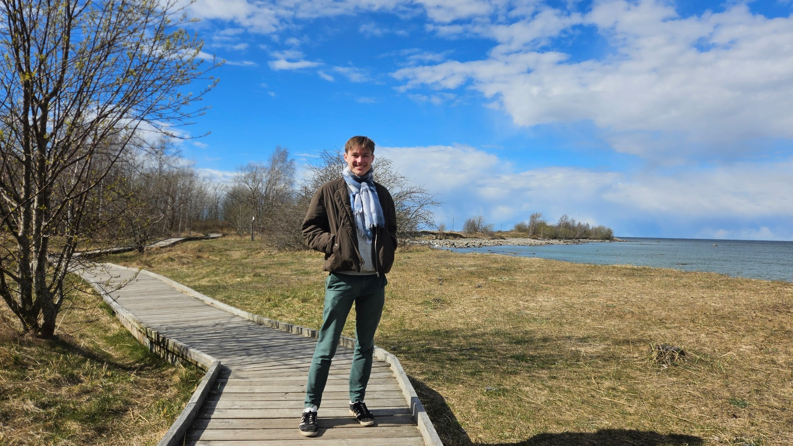

I am Vincent Moreau [vɛ̃sɑ̃ moʁo], a postdoctoral researcher in computer science working with Paweł Sobociński in the Compositional Systems and Methods Group at the Tallinn University of Technology.
My email address is vincent.moreau@taltech.ee.
I am interested in the interface between mathematics and computer science. Here are a few topics I work on, and strive to connect together and understand from a categorical viewpoint:
My orcid number is 0009-0005-0638-1363.
Here are my papers, see also my DBLP page:
I did my PhD at IRIF in Paris, under the supervision of Paul-André Melliès and Sam van Gool. I defended my PhD thesis in July 2025. Here is my manuscript:
More information on my PhD, as well as older notes and talks, can be found on my previous website.I wrote reviews for the following events: MFCS 2026, MFPS XLII, QPL 2026, LiCS 2026, FoSSaCS 2026, CSL 2026, PPDP 2024.
I wrote grants proposals to the Estonian Centre of Excellence in Artificial Intelligence and the FSMP.
I co-organized the Lambda Pros day, to bring together researchers interested in the growing connection between automata and λ-calculus. I also co-organized a number of reading groups, in particular about synthetic probability in monoidal structures in Tallinn, and about homotopy theory and type theory, topos theory, and the Taylor expansion of λ-terms in Paris.